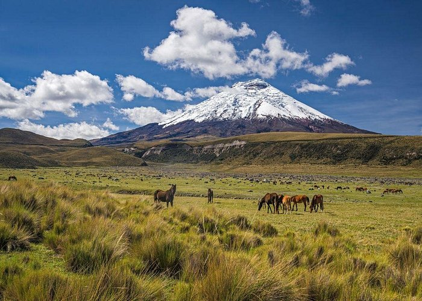

Planifica tu visita
Horarios de atención, cómo llegar desde Quito y qué llevar para tu ascenso.
Uno de los volcanes activos más altos del mundo y la segunda área protegida más visitada de Ecuador. Páramo andino, lagunas glaciares y senderos para todos los niveles, a menos de dos horas de Quito.

El Parque Nacional Cotopaxi se ubica en la sierra centro de Ecuador, entre las provincias de Cotopaxi, Pichincha y Napo, a 71 km al sur de Quito. Protege 33 393 hectáreas de páramo andino alrededor del volcán Cotopaxi (5 897 metros sobre el nivel del mar) y fue declarado área protegida en 1975.
En sus páramos y bosques de almohadilla habitan especies como el cóndor andino, el lobo de páramo, venados de cola blanca y caballos salvajes. La vegetación predominante es el pajonal, acompañado de almohadillas, chuquiraguas y romerillos propios de los altos Andes.
Acceso vehicular habilitado hasta el parqueadero de la montaña (4 600 m).
Antes de tu visita confirma el estado en los canales oficiales del Ministerio del Ambiente, Agua y Transición Ecológica, ya que las condiciones del páramo cambian rápidamente.
Horarios de atención, cómo llegar desde Quito y qué llevar para tu ascenso.
Mapa de senderos y tabla comparativa de rutas con tiempos estimados.
Estacionamientos, baños accesibles, zonas de descanso y camping.
Escríbenos tus preguntas o comunícate por teléfono y correo.